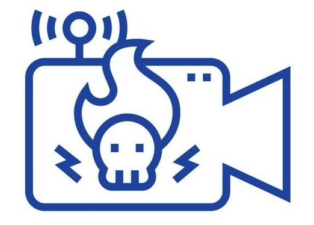
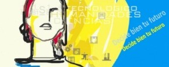

Información Personal
| Fecha de nacimiento: | 11/05/2007 | |
| Ubicación: | Miguel Esteban, Toledo | |
| Correo electrónico 1: | mimatei07@gmail.com | |
| Correo electrónico 2: | miuudev@outlook.com | |
| Teléfono: | +34 643 38 07 44 |
Presentación Personal
Soy Miruna, y me dedico al diseño de páginas web gracias al conocimiento adquirido en el grado superior de Desarrollo de Aplicaciones Web. Además de eso, también sé desplegar en entornos cliente y servidor. Por otro lado, soy bastante creativa, responsable y organizada a la hora de realizar algún trabajo.
Formación Académica
| Centro / Formación | Estudios / Prácticas | Año / Tiempo |
|---|---|---|
|
 IES Juan Patiño Torres |
Educación Secundaria Obligatoria | 2019 - 2023 |
|
IES Julián Zarco
|
(FPDM SMR) Formación Profesional de Grado Medio de Sistemas Microinformáticos y Redes | 2023 - 2025 |
|
Alimentación Naturfood
|
Prácticas del 2do año de FPGM SMR | Abril 2025 - Junio 2025 |
|
 IES Juan Bosco |
(FPGS DAM) 1er año de Formación Profesional del Grado Superior de Desarrollo de Aplicaciones Multiplataforma | 2025 - 2026 |
| (FPGS DAW) 2do año de Formación Profesional del Grado Superior de Desarrollo de Aplicaciones Web | 2026 - Actualidad |
Experiencia laboral
La única experiencia laboral que tuve fue en las prácticas del Grado Medio de SMR realizadas en Naturfood trabajando desde casa y realizando páginas web, pero en otro ámbito no he tenido ningún trabajo con contrato. Pero sí que tengo experiencia en diseños de páginas web y lenguajes de programación.
Intereses
Mis intereses principales:
- Tecnología y hardware: Interés por el montaje, optimización y mantenimiento de equipos informáticos, así como por la personalización de herramientas y entornos de trabajo.
- Sistemas y redes: Exploración y configuración de entornos en sistemas operativos Linux, virtualización y despliegue de redes locales.
- Desarrollo y experimentación web: Creación, maquetación y diseño de interfaces web responsivas, probando nuevas tecnologías y frameworks.
- Diseño y multimedia: Atención por el detalle estético, diseño de identidad visual y experimentación con la maquetación y el aspecto gráfico de proyectos digitales.